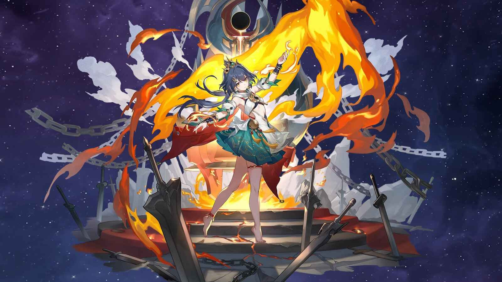

Yunli Honkai Star Rail: Rangkai Sang Penari Pedang – Build Terbaik, Light Cone, Relik, Ornamen, dan Komposisi Tim Paling Ganas!

Yunli, karakter Path Destruction dengan tipe Physical yang baru saja hadir di Honkai Star Rail, langsung mencuri perhatian para Trailblazer. Dengan kemampuan yang berfokus pada single-target damage yang sangat tinggi dan peningkatan kemampuan serangan berdasarkan HP yang hilang, Yunli adalah DPS yang sangat kuat, terutama saat melawan musuh tunggal yang tangguh. Namun, untuk memaksimalkan potensi Yunli, kamu memerlukan build yang tepat. Artikel ini akan membahas secara mendalam panduan build Yunli Honkai Star Rail, termasuk rekomendasi Light Cone terbaik, set Relik yang optimal, Ornamen Planar yang wajib digunakan, serta komposisi tim yang akan mengubah Yunli menjadi mesin pembunuh yang tak terhentikan!
Mengapa Yunli Begitu Istimewa?
Sebelum kita masuk ke detail build, mari kita pahami dulu mengapa Yunli begitu layak untuk diinvestasikan:
- Single-Target DPS Ganas: Yunli memang dirancang untuk menghancurkan musuh tunggal dengan damage yang luar biasa. Kemampuannya sangat efektif melawan bos dan Elite yang memiliki HP tinggi.
- Skalasi HP Loss: Semakin banyak HP yang hilang oleh Yunli, semakin tinggi damage yang bisa ia berikan. Ini membuatnya semakin kuat dalam pertempuran yang berkepanjangan.
- Break Effect Amplifier: Yunli memberikan dampak Break Effect yang cukup baik. Jika dikombinasikan dengan build yang tepat, Yunli dapat memberikan efek break yang sangat besar kepada musuh.
- Visual yang Menawan: Mari kita jujur, desain Yunli sebagai seorang penari pedang yang anggun sangat memukau. Kehadirannya di tim akan membuat pengalaman bermainmu semakin menyenangkan.
Prioritas Traces Yunli
Sebelum fokus pada build, penting untuk memprioritaskan Traces (Skill) Yunli dengan benar. Berikut adalah urutan yang direkomendasikan:
- Talent (Utama): Talent Yunli meningkatkan DMG yang diberikan berdasarkan HP yang hilang. Ini adalah sumber utama kekuatan Yunli, jadi maksimalkan secepat mungkin.
- Skill (Kedua): Skill Yunli memberikan DMG besar kepada musuh tunggal dan memberikan Break Effect.
- Ultimate (Ketiga): Ultimate Yunli meningkatkan ATK dan DMG yang diberikan kepada target yang diincar.
- Basic ATK (Terakhir): Basic ATK Yunli memberikan DMG kecil dan sebaiknya ditingkatkan terakhir.
Pastikan kamu juga membuka semua Bonus Ability yang relevan untuk meningkatkan efektivitas Yunli secara keseluruhan.
Light Cone Terbaik untuk Yunli
Light Cone adalah senjata utama bagi karakter di Honkai Star Rail, dan pilihan Light Cone yang tepat dapat sangat memengaruhi performa Yunli. Berikut adalah beberapa rekomendasi Light Cone terbaik untuk Yunli:
- 5-Star - "Destiny is Unfair" (Signature Light Cone): Ini adalah Light Cone terbaik untuk Yunli, dirancang khusus untuk memaksimalkan potensinya. Efek Light Cone ini meningkatkan CRIT Rate, DMG Yunli terhadap musuh yang memiliki efek Vulnerability, dan Break Effect. Jika kamu memiliki cukup Stellar Jade, sangat disarankan untuk mendapatkan Light Cone ini.
- 5-Star - "Brighter Than the Sun": Light Cone ini meningkatkan CRIT Rate, ATK, dan memberikan stack kepada karakter yang memakainya yang meningkatkan DMG Basic ATK. Cocok untuk Yunli jika Light Cone signaturenya tidak memungkinkan.
- 5-Star - "Something Irreplaceable": Light Cone ini meningkatkan ATK karakter yang memakainya dan mengembalikan HP karakter serta meningkatkan DMG yang diberikan setelah karakter tersebut memberikan serangan. Sangat cocok untuk Yunli yang membutuhkan tambahan sustain.
- 4-Star - "Under the Blue Sky": Light Cone ini meningkatkan ATK karakter yang memakainya dan memberikan CRIT Rate setelah karakter tersebut berhasil mengalahkan musuh. Light Cone yang cukup bagus untuk membantumu meningkatkan CRIT Rate.
- 4-Star - "A Secret Vow": Light Cone ini meningkatkan DMG karakter yang memakainya terhadap musuh yang memiliki persentase HP yang lebih tinggi dan meningkatkan DMG yang diberikan setelah karakter tersebut menggunakan Skill.
Relik Terbaik untuk Yunli
Relik memberikan bonus statistik yang signifikan dan efek set yang kuat yang dapat meningkatkan kemampuan Yunli. Berikut adalah set Relik yang direkomendasikan:
- 4-Piece Champion of Streetwise Boxing: Set ini adalah pilihan terbaik untuk meningkatkan damage Physical Yunli secara keseluruhan. Set 2-piece meningkatkan Physical DMG, sementara set 4-piece meningkatkan ATK setelah karakter menggunakan Skill atau mendapatkan serangan.
- 2-Piece Champion of Streetwise Boxing + 2-Piece Musketeer of Wild Wheat: Kombinasi ini memberikan bonus Physical DMG dan ATK, memberikan peningkatan damage yang konsisten. Pilihan yang baik jika kamu belum memiliki set 4-piece Champion of Streetwise Boxing yang bagus.
Statistik Relik yang Diprioritaskan
Saat memilih Relik, perhatikan statistik utama dan sub-statistik berikut:
- Body: CRIT Rate atau CRIT DMG (tergantung kebutuhan)
- Feet: SPD
- Planar Sphere: Physical DMG Bonus
- Link Rope: Break Effect atau ATK
Sub-Stat yang Dicari:
- CRIT Rate
- CRIT DMG
- SPD
- ATK %
- Break Effect
Pastikan kamu mengutamakan CRIT Rate dan CRIT DMG untuk memaksimalkan output damage Yunli, serta SPD agar ia bisa menyerang lebih sering.
Ornamen Planar Terbaik untuk Yunli
Ornamen Planar memberikan bonus statistik tambahan dan efek set yang unik. Berikut adalah beberapa rekomendasi Ornamen Planar terbaik untuk Yunli:
- Rutilant Arena: Meningkatkan CRIT Rate dan meningkatkan DMG Skill dan Basic ATK setelah CRIT Rate mencapai 70%.
- Firmament Frontline: Glamoth: Meningkatkan ATK dan memberikan DMG bonus jika SPD karakter mencapai ambang tertentu.
- Inert Salsotto: Meningkatkan CRIT Rate dan meningkatkan DMG Ultimate dan Follow-up Attack setelah CRIT Rate mencapai 50%.
Pilihan Ornamen Planar tergantung pada statistik yang sudah kamu miliki. Rutilant Arena adalah pilihan yang solid jika kamu sudah memiliki CRIT Rate yang tinggi, sementara Glamoth memberikan peningkatan ATK dan DMG yang konsisten.
Komposisi Tim Terbaik untuk Yunli
Yunli bersinar ketika ditempatkan dalam tim yang mendukung potensinya sebagai DPS tunggal. Berikut adalah beberapa rekomendasi komposisi tim yang akan memaksimalkan kemampuan Yunli:
Tim "Hypercarry":
- Yunli (DPS): Sebagai damage dealer utama.
- Bronya (Support): Meningkatkan ATK, CRIT DMG, dan memajukan giliran Yunli, memungkinkan dia untuk menyerang lebih sering.
- Tingyun (Support): Meningkatkan ATK, DMG, dan memberikan Energy kepada Yunli, memastikan dia dapat menggunakan Ultimate-nya sesering mungkin.
- Fu Xuan (Sustain): Memberikan perlindungan kepada tim dan meningkatkan CRIT Rate.
Tim Break Effect:
- Yunli (DPS): Sebagai damage dealer utama dengan Break Effect.
- Ruan Mei (Support): Meningkatkan Break Effect, Speed dan DMG yang diterima musuh.
- Asta (Support): Meningkatkan ATK dan Speed tim untuk memaksimalkan DMG yang diberikan.
- Gallagher (Sustain): Memiliki efek Break Effect dan meningkatkan DMG yang diterima musuh.
Tips dan Trik Tambahan untuk Memaksimalkan Yunli
- Pahami Rotasi Skill: Kuasai rotasi skill Yunli untuk memaksimalkan output damage-nya.
- Manfaatkan Break Effect: Manfaatkan kemampuan Yunli untuk memberikan Break Effect kepada musuh.
- Perhatikan Posisi: Posisikan Yunli dengan hati-hati untuk melindunginya dari serangan musuh dan memungkinkannya untuk menyerang dengan bebas.
- Maksimalkan Synergi Tim: Pilih anggota tim yang saling melengkapi dan memaksimalkan potensi Yunli.
- Terus Beradaptasi: Meta Honkai Star Rail terus berubah, jadi jangan takut untuk bereksperimen dengan build dan komposisi tim yang berbeda untuk menemukan apa yang paling cocok untukmu.
Kesimpulan
Yunli adalah karakter DPS yang sangat kuat yang dapat memberikan damage yang luar biasa kepada musuh tunggal. Dengan build yang tepat, kamu dapat mengubahnya menjadi mesin pembunuh yang tak terhentikan. Ingatlah untuk memprioritaskan Traces yang benar, memilih Light Cone dan Relik yang sesuai, dan membangun tim yang mendukung potensinya. Dengan mengikuti panduan ini, kamu akan dapat memaksimalkan potensi Yunli dan mendominasi arena Honkai Star Rail!
Semoga panduan ini membantumu membangun Yunli yang paling kuat! Selamat berpetualang, Trailblazer!
Top Up Honkai Star Rail (HSR) di Topupgim, tempat terpercaya untuk meningkatkan potensi permainanmu dan mendapatkan Stellar Jade lebih cepat